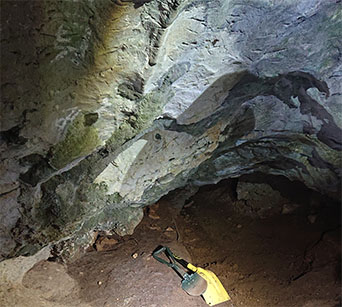
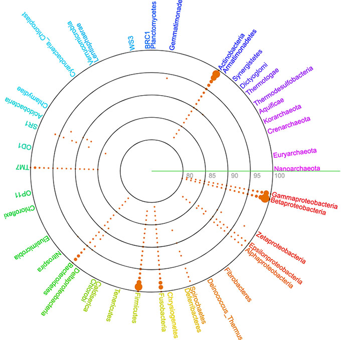

国立遺伝学研究所 ゲノム多様性研究室
- 
- 
Our laboratory is working on the genomic diversity of microorganisms and other organisms using bioinformatics technology. Metagenomics has made it possible to analyze the microbial genomes in environments, including microbes that are difficult to cultivate. In addition, the ancient DNA data, which is a type of metagenomic data, has made it possible to analyze the genomes of organisms that became extinct more than tens of thousands of years ago. We are working on a wide range of research on the genome diversity of organisms, in close collaboration with the Advanced Genomics Center at the National Institute of Genetics, using cutting-edge genome analysis technologies and bioinformatics analysis technologies.